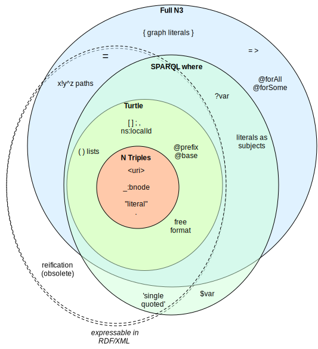
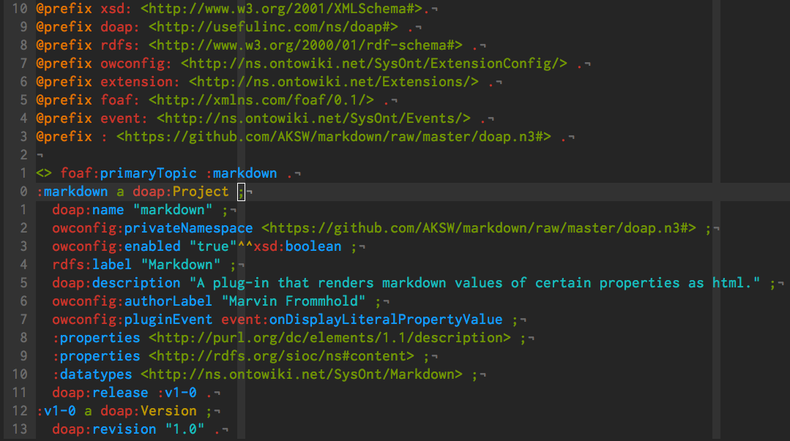

Outline
AKSW Research Group
Turtle Introduction
AKSW Orga
Hosted at Chair Business Information Systems (at IfI at UniLeipzig) as well as InfAI
Sub Groups:
Emergent Semantics
Semantic Abstraction
Machine Learning and Ontology Engineering
AKSW History
Founded in 2006 by Sören Auer, Thomas Riechert and Sebastian Tramp
First Project was the BMBF funded SoftWiki
Now a research group with over 25 members from 10 countries
Mostly EU funded
Emergent Semantics
Research Areas
Agile Knowledge Engineering
Federated Social Networks
Linked Data
Semantic Software Engineering
Semantic Web Infrastructure
Emergent Semantics
Projects (selection)
DSSN - An Architecture of a Distributed Semantic Social Network
Erfurt - PHP5 / Zend based Semantic Web API for Social Semantic Software
LOD2 - Creating Knowledge out of Interlinked Data LinkedGeoData - adds a spatial dimension to the Web of Data OntoWiki - a tool providing support for agile, distributed knowledge engineering scenarios
RDFaCE - RDFa Content Editor
Catalogus Professorum - Leipzig Professors Catalog
SIMBA - Semantic Abstraction
Research Areas
Extraction of RDF and OWL from unstructured data
Link Discovery
Machine Learning
Natural Language Processing
SIMBA - Semantic Abstraction
Projects (selection)
BOA - BOotstrapping linked datA
FOX - Federated knOwledge eXtraction Framework LIMES - LInk discovery framework for MEtric Spaces SCMS - Semantic Content Management Systems
SINA - Semantically INterpreting user query towards question-Answering
BorderFlow - a general-purpose graph clustering tool
ALOE - Assisted Linked Data Consumption Engine
MOLE - Machine Learning and Ontology Engineering
Projects (selection)
DBpedia - Querying Wikipedia like a Semantic Database DL-Learner - a tool for supervised Machine Learning in OWL and Description Logics LATC - LOD Around-the-Clock
NKE - a light-weight methodology for low-cost knowledge engineering
ORE - A tool for debugging and enriching OWL knowledge bases
AutoSPARQL - Convert a natural language expression to a SPARQL query
Turtle - Terse RDF Triple Language
The Resource Description Framework (RDF) is a general-purpose language for representing information in the Web.
Turtle is a language to write RDF graphs in a compact form.
RDF Concepts I
Turtle is an RDF Syntax. The most important RDF concepts are
A graph is a set of statements.
A statement is a tupel of subject, predicate and object terms.
A term can be a resource, a blank node and a literal.
RDF Concepts II
A resource is identified by an IRI.
A literal is a string with an optional datatype OR language tag.
A blank node is just like a resource but without IRI.
RDF Import / Parser
RDF can be serialized in different syntax. Widely in use are:
RDF/XML , 1999 (2004, revised W3C recommendation)N-Triples , 2001 (internal W3C working draft)Turtle , 2011 (W3C member submission)
But there are many more:
N3 , (2005, spec TBL),
TriX (2004, by HP),
GRDDL (2007),
RDF/JSON (2008 by Talis),
RDFa (2008)
RDF Serializations

http://www.w3.org/DesignIssues/diagrams/n3/venn
Syntax: Turtle / N3
Three simple triples …
@prefix foaf: <http://xmlns.com/foaf/0.1/> .
@prefix rdfs: <http://www.w3.org/2000/01/rdf-schema#> .
<http://sebastian.tramp.name> a foaf:Person;
foaf:workInfoHomepage <http://aksw.org/SebastianTramp>;
rdfs:label "Sebastian Tramp".
Syntax: RDF / XML
… can look …
<?xml version="1.0" encoding="utf-8"?>
<rdf:RDF
xmlns:foaf="http://xmlns.com/foaf/0.1/"
xmlns:rdf="http://www.w3.org/1999/02/22-rdf-syntax-ns#"
xmlns:rdfs="http://www.w3.org/2000/01/rdf-schema#">
<foaf:Person rdf:about="http://sebastian.tramp.name">
<rdfs:label>Sebastian Tramp</rdfs:label>
<foaf:workInfoHomepage rdf:resource="http://aksw.org/SebastianTramp"/>
</foaf:Person>
</rdf:RDF>
Syntax: RDF / JSON
… soooo different.
{
"http://sebastian.tramp.name" : {
"http://www.w3.org/1999/02/22-rdf-syntax-ns#type" : [ {
"value" : "http://xmlns.com/foaf/0.1/Person",
"type" : "uri"
}
],
"http://www.w3.org/2000/01/rdf-schema#label" : [ {
"value" : "Sebastian Tramp",
"type" : "literal"
}
],
"http://xmlns.com/foaf/0.1/workInfoHomepage" : [ {
"value" : "http://aksw.org/SebastianTramp",
"type" : "uri"
}
]
}
}
Syntax: Turtle
@prefix foaf: <http://xmlns.com/foaf/0.1/> .
@prefix rdfs: <http://www.w3.org/2000/01/rdf-schema#> .
<http://sebastian.tramp.name> a foaf:Person;
foaf:workInfoHomepage <http://aksw.org/SebastianTramp>;
foaf:knows [
a foaf:Person;
rdfs:label "Roland Mücke"
].
rdfs:label "Sebastian Tramp", "Seebi".
Turtle allows for prefix declarations, multiple abbrevations as well as nested descriptions.
Turtle uses UTF-8 for content encoding and is specified by an
EBNF .
Turtle in VIM

vim syntax hightlightning with some autocompletion as semweb.vim
Thank you for your Attention!
My WebID:
This slide deck:
←
→